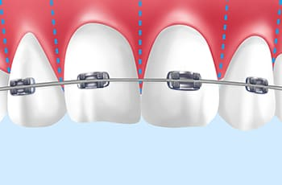
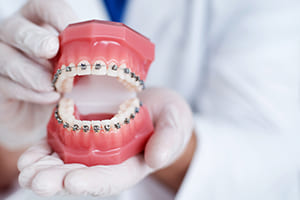

矯正期間が短い
短期間矯正（スピード矯正）とは
短期間矯正（スピード矯正）とは、従来のワイヤー矯正よりも短期間で治療を終えられる矯正治療法です。表側矯正や裏側矯正などのワイヤー矯正は、歯を動かして治療完了するまでにおよそ2年の治療期間が必要になります。その期間は装置を外すことができず、食事やブラッシング、発音などに影響が出ます。また、特に表側矯正の場合は見た目を気にされる方がほとんどです。
短期間矯正（スピード矯正）ならば、患者さまに合わせてコルチコトミー法やインプラント矯正といった治療法を用いて歯をスピーディーに動かし、快適に矯正できます。時間がなくて矯正を諦めていた方でもチャレンジできます。ぜひ、新宿の歯医者「新宿ルーブル歯科・矯正歯科」までご相談ください。
短期間矯正（スピード矯正）は
このような方にお勧めです
- 結婚式や成人式を控えているので短期間で歯並びを整えたい
- 仕事やプライベートの関係で長期的な通院が難しい
- ワイヤー矯正は治療期間が長く、治療中も不便が多いので避けたい
- 接客・営業など人に会う機会が多く、治療を早く終えたい
- 海外転勤などの事情でその前に治療を終えたい
- 早く矯正したいが、セラミック治療ではなく矯正治療で治療したい
短期間矯正（スピード矯正）の
メリット・デメリットについて
-
メリット
-
- 短期間で歯並びを整えられる
- 長期間、何度も通院する必要がない
- 治療箇所を絞れば期間が短縮できてリーズナブルに治療できる
-
デメリット
-
- 歯並びの状態によっては適用できない可能性がある
- 症例・治療法によって外科手術が必要になる
- 対応できる歯科医院が少ない
短期間矯正（スピード矯正）は
高度な技術と経験が必要
短期間矯正は一般的な矯正治療法よりも専門性が高く、場合によっては外科的処置が必要になるため難しい矯正治療法です。
歯やあごの周辺には神経や血管が多く通っているため、十分な知識・経験がなければ外科的処置はリスクがあります。また、歯にかかる力を適度に調整しなければならず、高度な技術が必要とされます。
当院は、矯正と口腔外科の専門知識を持つ歯科医師が在籍している歯科医院です。そのため、短期間矯正の中でも難しいとされるコルチコトミー法やインプラント矯正などにも対応しています。実際に毎月5件ほどの治療を行っており、累積の対応症例数も豊富です。短期間矯正ならぜひ当院にお任せください。
短期間矯正メニュー
寿谷法 コルチコトミー矯正

コルチコトミー法は、100年以上の歴史がある矯正治療法です。外科的処置を行う治療法で、歯を支えるあごの骨に溝を入れて歯の動くスピードを速めるだけでなく、キレイに整えることができます。
当院では歴史ある通常のコルチコトミー法よりスピードの速い、「寿谷式 コルチコトミー矯正」を行っています。適用できない歯並びもありますが、ワイヤー矯正と比べて圧倒的に矯正期間が短くなるため、患者さまの負担を減らすことが可能です。
寿谷式 コルチコトミー矯正の特長

「寿谷式 コルチコトミー矯正」は、あごの骨に溝を入れて歯を動かしやすくするため、矯正装置を装着する期間を短くすることができます。治療期間を大幅に短縮できるため、治療を諦めていた方に最適です。また、あごの骨を拡大させることでスペースができるため、抜歯が必要だった症例でも歯を残したまま治療できるケースが増えます。さらに、矯正時に歯の根の先端が溶けてしまう歯根吸収も「寿谷式 コルチコトミー矯正」なら抑えることが可能です。
ミニインプラント矯正

ミニインプラント矯正とは、あごの骨にミニインプラントを埋入し、それを支点にしてワイヤー矯正よりも強い力で歯を動かすことで治療期間を短縮するものです。ミニインプラントの埋入位置を調整すれば、大きな装置を使用しなくても任意の方向に歯を引っ張れるのもミニインプラント矯正の特長です。
ミニインプラントは、小さく細いため施術中・治療中の痛みはほぼありません。治療後も痛みもなく30秒ほどでミニインプラントを除去ができます。快適でスピーディーな矯正治療をご希望ならぜひご検討ください。
加速矯正補助装置

矯正治療の効果を促進できる装置が加速矯正補助装置です。マウスピース型の装置で、1日1回10分間の装着で、矯正治療中の歯の移動を促進できます。矯正装置単独の場合よりも治療期間を大幅に短縮可能です。
加速矯正補助装置はどんな矯正装置との併用が可能で、一般的なワイヤー型はもちろん、ブラケット装置やマウスピース型矯正でも使えます。また、加速矯正補助装置を使用する場合、マウスピース型矯正の交換頻度が高まるため、汚れる前に新しく清潔なマウスピースと交換できるという副次的なメリットもあります。